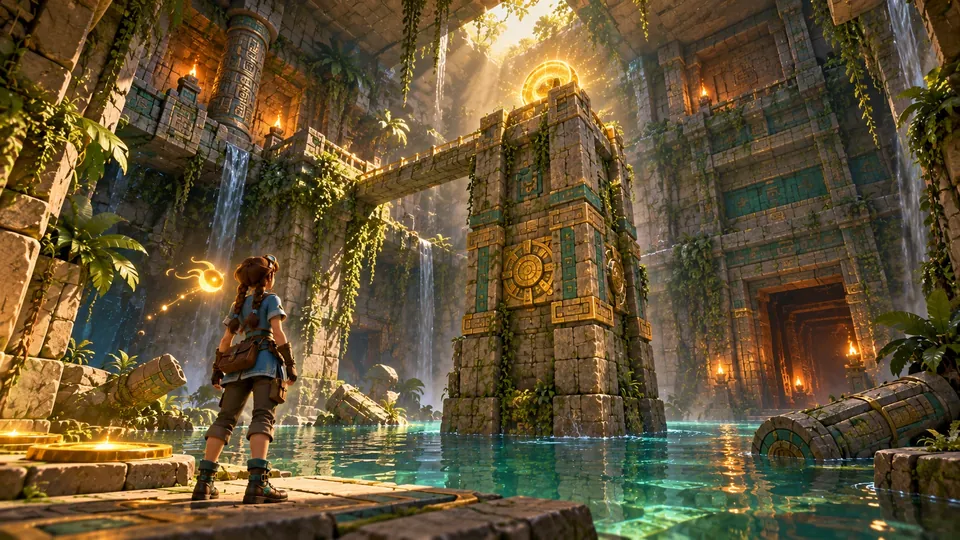
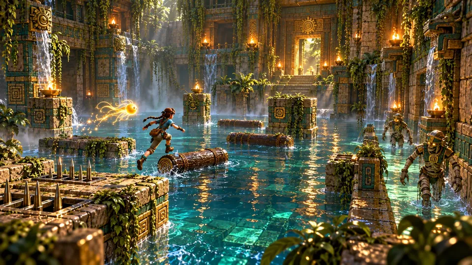
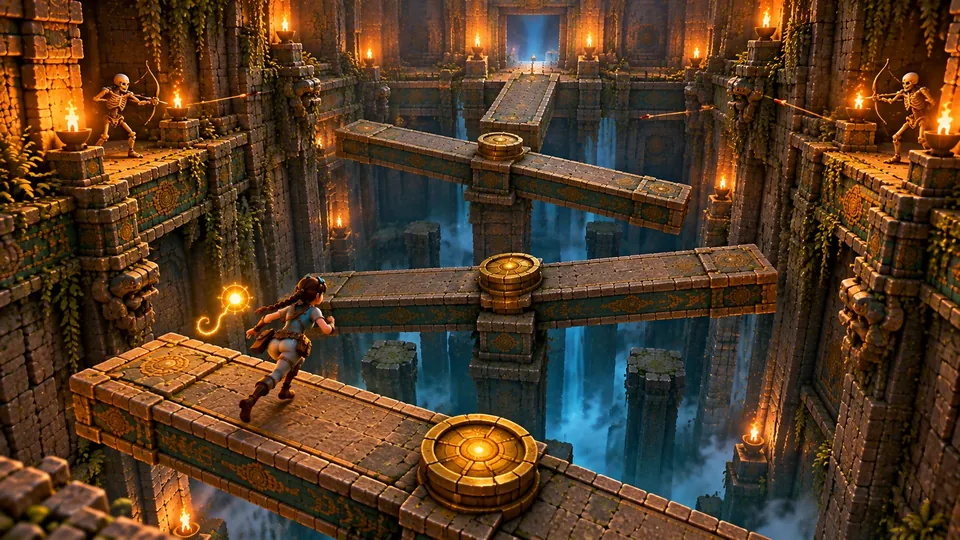
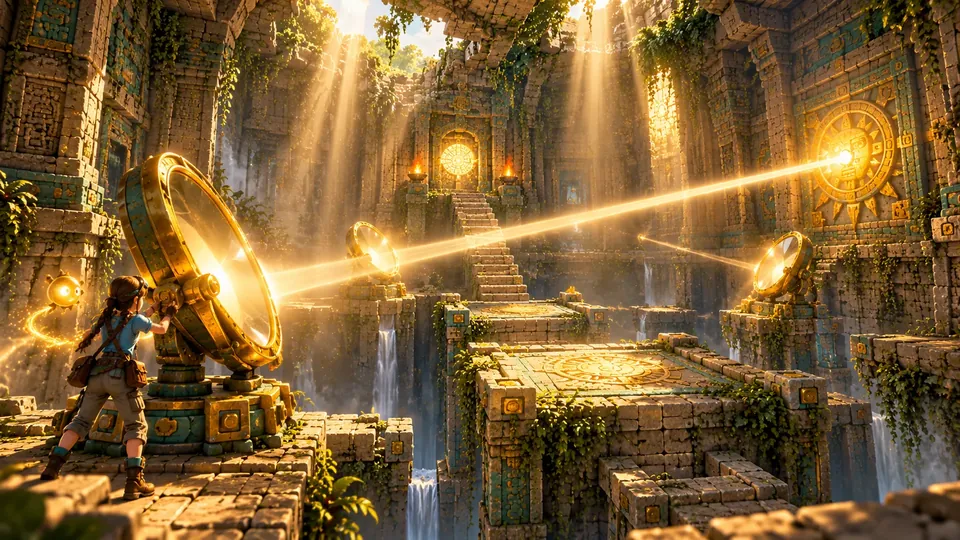
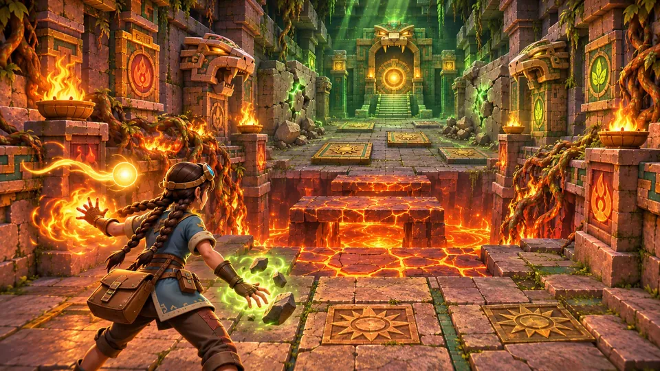
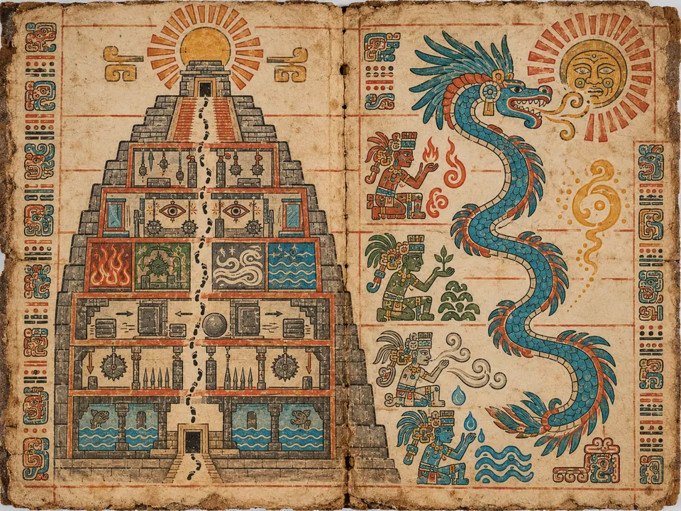

The Climb
The Pyramid
The Shell, seventeen floors in six tiers, and the summit.
One pyramid, climbed from the inside: the Shell, then seventeen floors in six tiers, then the open summit.
Every floor runs the same way. Room A, then Room B, which holds the floor's Key Orb, then the Portal Chamber, where Kaya sockets the orb, K'in speaks one line, a fragment of the mural lights, and she ascends. Every room hides exactly one golden idol.
Puzzles scale with the climb: one mechanic per room in Tiers I and II, combined mechanics in III and IV, and layered perception puzzles under pressure in V and VI.
- Floors
- The Shell, 17 floors in six tiers, the summit
- Per floor
- Room A, Room B with the Key Orb, Portal Chamber
- Bosses
- Gearwarden, Jaguar Priest, Priest's Lieutenant, Hollow High Priest
- Players
- Single Player
From the Threshold to the sun












The campaign, floor by floor
| Floor | Name | New mechanic | Reward |
|---|---|---|---|
| 0 | The Shell | All core verbs | Obsidian macuahuitl; the Threshold opens |
| 1 | The Drowned Gallery | Water hazards, logs, drain, lift | – |
| 2 | The Root Cellars | Swing, slick slope, ranged combat | Spirit Blowgun; Tier I shortcut |
| 3 | Hall of Blades | Saws, pendulums, breakable tiles, plate sequence | Sunburst Sling in the shop |
| 4 | The Dart Colonnade | Darts, fire vents, rotatable shield statues, wave fight | – |
| 5 | The Collapsing Stair | Crumbling stairs, boulders, the first chase | Tier II shortcut |
| 6 | The Tilting Sanctum | Seesaws, rotating discs | – |
| 7 | The Vanishing Path | Phasing platforms, the memory path | K'in's Glyph Scan |
| 8 | The Gear Ascent | Lifts, gears, timed switches | Tier III shortcut |
| 9 | The Ember Forge | Lava, fire jets, burning bridges | Fire Orb, Ember Censer |
| 10 | The Buried Ossuary | Cracked walls, heavy plates, boulders | Earth Orb |
| 11 | The Broken Ramparts | Wind gusts, updrafts, open to the sky | Wind Orb |
| 12 | The Sunken Reservoir | Rising water, currents, air pockets | Water Orb; Tier IV shortcut |
| 13 | The Mirror Sanctum | Mirrors, light beams | – |
| 14 | The Hall of Lies | Illusion floors, false walls, a chase | – |
| 15 | The Totem Vault | Totem alignment, torches | Tier V shortcut |
| 16 | The Elemental Gauntlet | All four orbs combined | – |
| 17 | The Inner Sanctum | Every trap, timed doors | Sun Orb; the way to the summit |
| 18 | The Sky Altar | Boss phases on the braziers | The ending choice; the Trials unlock |